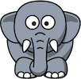

<!DOCTYPE html>
<html>
    <head>
        <meta charset="utf-8">
        <meta name="viewport" content="width=device-width, initial-scale=1">
        <title>Experiment</title>
        <script src="https://unpkg.com/jspsych@7.3.4"></script>
        <script src="https://unpkg.com/@jspsych/plugin-html-keyboard-response@1.1.3"></script>
        <script src="https://unpkg.com/@jspsych/plugin-html-button-response@1.1.3"></script>
        <script src="https://unpkg.com/@jspsych/plugin-preload@1.1.3"></script>
        <link rel="stylesheet" href="./pic.css">
        <script src="./pic_browser_settings.js"></script>
        <script src="./pic_preload_assets.js"></script>
        <script src="./pic_buttons.js"></script>
        <script src="./pic_global_states.js"></script>
        <script src="./pic_cover_story.js"></script>
        <script src="./pic_test_stimuli.js"></script>
        <link href="https://unpkg.com/jspsych@7.3.4/css/jspsych.css" rel="stylesheet" type="text/css" />
</head>
    <body></body>
    <script>

// need to initialize jsPsych and the timeline, which will control the actual experiment
var timeline = [];
var jsPsych = initJsPsych({
        show_progress_bar: false,
    });
// trial-level variables
var trialIndex = 0;
var curTrial = "temp";
var block = 0; // 0 = first format block, 1 = second format block
var left_stim = "temp";
var right_stim = "temp";
var left_path = "temp";
var right_path = "temp";
var trialIndexType = "test"; // fix to add instruction

// setting the task conditions
var taskConditions = ["probability", "mixture", "sharing"];
var myConditionNumber = Math.floor(Math.random() * 3);
var myCondition = taskConditions[myConditionNumber];
// setting the format order
var orderConditions = ["continuousFirst", "discretizedFirst"];
var myOrderNumber = Math.floor(Math.random() * 2);
var myOrder = orderConditions[myOrderNumber];
// setting the subset order
var bottomColorConditions = ["orange", "blue"];
var bottomColorNumber = Math.floor(Math.random() * 2);
var participantBottomColor = bottomColorConditions[bottomColorNumber];
// set the blocks and formats for each participant using random assignment
var ratio_tasks =
myOrder == "continuousFirst"
? [
{
    condition: "ContRectInt",
    stim_pngs: "ContRectInt",
    disccont: "continuous",
    reg: "regular",
},
{
    condition: "DivRectInt",
    stim_pngs: "DivRectInt",
    disccont: "discretized",
    reg: "regular",
},
]
: [
{
    condition: "DivRectInt",
    stim_pngs: "DivRectInt",
    disccont: "discretized",
    reg: "regular",
},
{
    condition: "ContRectInt",
    stim_pngs: "ContRectInt",
    disccont: "continuous",
    reg: "regular",
},
];

// shuffle is the Fisher-Yates (aka Knuth) Shuffle
function shuffle(array) {
let currentIndex = array.length,
    randomIndex;
    while (currentIndex != 0) {
        randomIndex = Math.floor(Math.random() * currentIndex);
        currentIndex--;
        [array[currentIndex], array[randomIndex]] = [array[randomIndex], array[currentIndex]];
    }
return array;
}
//setting the color counterbalance
var numColor = "orange";
var otherColor = "blue";
// adding accuracy information to the stimulus lists
Object.keys(stim_block_1).forEach((key) => {
    stim_block_1[key].leftProp =
    (stim_block_1[key].opt1_stim.split("_")[0] * 1) /
    (stim_block_1[key].opt1_stim.split("_")[0] * 1 + stim_block_1[key].opt1_stim.split("_")[1] * 1);
    stim_block_1[key].rightProp =
    (stim_block_1[key].opt2_stim.split("_")[0] * 1) /
    (stim_block_1[key].opt2_stim.split("_")[0] * 1 + stim_block_1[key].opt2_stim.split("_")[1] * 1);
    if (stim_block_1[key].leftProp > stim_block_1[key].rightProp) {
        stim_block_1[key].correct_response = "left";
    } else if (stim_block_1[key].rightProp > stim_block_1[key].leftProp) {
        stim_block_1[key].correct_response = "right";
    }
});
// adding accuracy information to the stimulus lists
Object.keys(stim_block_2).forEach((key) => {
    stim_block_2[key].leftProp =
    (stim_block_2[key].opt1_stim.split("_")[0] * 1) /
    (stim_block_2[key].opt1_stim.split("_")[0] * 1 + stim_block_2[key].opt1_stim.split("_")[1] * 1);
    stim_block_2[key].rightProp =
    (stim_block_2[key].opt2_stim.split("_")[0] * 1) /
    (stim_block_2[key].opt2_stim.split("_")[0] * 1 + stim_block_2[key].opt2_stim.split("_")[1] * 1);
    if (stim_block_2[key].leftProp > stim_block_2[key].rightProp) {
        stim_block_2[key].correct_response = "left";
    } else if (stim_block_2[key].rightProp > stim_block_2[key].leftProp) {
        stim_block_2[key].correct_response = "right";
    }
});
// pool of side character pairs assigned uniquely across trials
var animalPool = [
"dog",
"lion",
"moose",
"hummingbird",
"sloth",
"monkey",
"leopard",
"turtle",
"wolf",
"octopus",
"penguin",
"parrot",
"cow",
"dolphin",
"hippo",
"frog",
"polarbear",
"shark",
"squirrel",
"beaver",
"bear",
"bat",
"seagull",
"bluewhale",
"seahorse",
"fox",
"narwhal",
"zebra",
"fish",
"giraffe",
"bluejay",
"starfish",
];
// shuffle test stimuli
shuffle(stim_block_1);
shuffle(stim_block_2);
// shuffle side character pairs
var shuffledAnimals = shuffle(animalPool.slice());
// combine both blocks and assign unique animals across the whole task
var allTrials = stim_block_1.concat(stim_block_2);
allTrials.forEach(function (trial, i) {
    trial.animal = shuffledAnimals[i];
});

// prompts based on task condition
function getCurPrompt() {
    if (myCondition == "probability") {
        return "audios/probability/task_prompt.m4a";
    } else if (myCondition == "mixture") {
        return "audios/mixture/task_prompt.m4a";
    } else if (myCondition == "sharing") {
        return "audios/sharing/task_prompt.m4a";
    }
return "";
}
// create test trials, building the current test trial from the active stimulus block
function getCurTrial() {
var curList;
    if (ratio_loop == 0) {
        curList = stim_block_1;
    }
if (ratio_loop == 1) {
    curList = stim_block_2;
}
curTrial = curList[trialIndex];
left_stim = curTrial.opt1_stim;
right_stim = curTrial.opt2_stim;
var bottomColor = participantBottomColor;
left_path = "StimFiles_test/" + curCondition + "_" + bottomColor + "_bottom_" + left_stim + ".png";
right_path = "StimFiles_test/" + curCondition + "_" + bottomColor + "_bottom_" + right_stim + ".png";
var curAnimal = curTrial.animal;
var curSideCharacter = String(curAnimal).trim().replace(".png", "").replace(" ", "");
var animal_path = "img/animals/" + curSideCharacter + ".png";
return {
    left_path: left_path,
    right_path: right_path,
    animal_path: animal_path,
    preload_audio: getCurPrompt(),
    correct_response: curTrial.correct_response,
};
}
// defining HTML for the current test trial
function buildTestStim() {
var trialData = getCurTrial();
    return `
    <div class="trial-layout">
        
        <div id="left-stim-container" class="stim-container left">
            
            <div class="side-character-container">
                
            </div>
    </div>
<div id="right-stim-container" class="stim-container right">
    
    <div class="side-character-container">
        
    </div>
</div>
</div>`;
}

// choose task-specific click instruction audio for instruction trials 
function getClickInstructionsAudio() {
    if (myCondition == "probability") {
        return "audios/probability/click_instructions.m4a";
    } else if (myCondition == "mixture") {
        return "audios/mixture/click_instructions.m4a";
    } else if (myCondition == "sharing") {
        return "audios/sharing/click_instructions.m4a";
    }
return "";
}

// instruction img based on format order and subset order
function getInstructionImg(blockNumber) {
var formatCondition = ratio_tasks[blockNumber].condition;
    return "img/format_instructions/" + formatCondition + "_" + participantBottomColor + "_bottom_7_7.png";
}

// convert color label to numerator subset location for instruction trials
function getInstrFormat(colorName) {
    if (participantBottomColor === colorName) {
        return "bottom";
    } else {
        return "top";
    }
}
// choose probability demo for current format and condition
function getProbabilityInstrDemo(blockNumber, landedColor) {
var formatCondition = ratio_tasks[blockNumber].condition;
    return (
    "videos/probability_instructions/" +
    formatCondition +
    "_" +
    participantBottomColor +
    "_bottom_7_7_" +
    landedColor +
    ".mp4"
);
}
// create instruction trials
function buildInstrStim(audioPath, blockNumber, textInstruction) {
var instructionImg = getInstructionImg(blockNumber);
    return `
    <div class="instr-layout">
        <div class="instr-text">
            ${createAudioPrompt(audioPath, getClickInstructionsAudio())}
            <p style="font-size: 20px; line-height: 1.4; margin-top: 8px;">
                ${textInstruction}
            </p>
    </div>

<div class="instr-stim-container">
    
    
</div>
</div>
`;
}


// define HTML for probability instruction trials
function buildProbabilityInstrTrial(audioPath, blockNumber, landedColor, textInstruction) {
var videoPath = getProbabilityInstrDemo(blockNumber, landedColor);
    return `
    <div class="instr-layout">
        <div class="prob-instr-text">
            ${createAudioPrompt(audioPath, null, true)}
            <p class="prob-instr-helper">
                ${textInstruction}
            </p>
        <video
        id="probability-demo-video"
        controls
        preload="auto"
        class="instr-video"
        onended="finishProbabilityDemoAudio()"
        >
        <source src="${videoPath}" type="video/mp4">
        </video>
    
    
</div>
</div>
`;
}


// instruction feedback per task condition
function makeInstructionFeedback(correctAudio, incorrectAudio) {
    return {
        type: jsPsychHtmlButtonResponse,
        stimulus: function () {
var last = jsPsych.data.get().last(1).values()[0];
var feedbackAudio = last.correct ? correctAudio : incorrectAudio;
            return `
            <div style="text-align: center; margin-top: 240px;">
                
                ${createAudioPrompt(feedbackAudio)}
                </div>
    `;
},
choices: ["Next"],
button_html: '<button class="child-next-btn" disabled>%choice%</button>',
on_load: loadNextButton,
on_finish: function (data) {
var last = jsPsych.data.get().last(2).values()[0];
    data.event = "instruction_feedback";
    data.instr_trial_accuracy = last.correct;
},
};
}

// mixture task instruction trials: identify numerator
var mixture_check_orange_block1 = {
    type: jsPsychHtmlButtonResponse,
    stimulus: function () {
        return buildInstrStim("audios/mixture/identifyingparts_orange.m4a", 0, "");
    },
choices: ["num", "other"],
button_html: '<button class="subset-circle-button" aria-label="%choice%"></button>',
response_ends_trial: true,
on_load: function () {
    setButtonLayoutClass("subset-button-position");
    playCurrentInstructionAudio();
},
on_finish: function (data) {
    setButtonLayoutClass(null);
var correctSubset = "num";
    data.event = "instruction_check";
    data.instruction_question = "Which color is the sweet oranges?";
    data.instruction_target_color = "orange";
    data.response_subset = data.response === 0 ? "num" : "other";
    data.correct_subset = correctSubset;
    data.correct = data.response_subset === correctSubset;
    data.block = 0;
    data.format = ratio_tasks[0].disccont;
    data.bottom_color = participantBottomColor;
},
};
// mixture task instruction trials: identify other subset
var mixture_check_blue_block1 = {
    type: jsPsychHtmlButtonResponse,
    stimulus: function () {
        return buildInstrStim("audios/mixture/identifyingparts_blue.m4a", 0, "");
    },
choices: ["num", "other"],
button_html: '<button class="subset-circle-button" aria-label="%choice%"></button>',
response_ends_trial: true,
on_load: function () {
    setButtonLayoutClass("subset-button-position");
    playCurrentInstructionAudio();
},
on_finish: function (data) {
    setButtonLayoutClass(null);
var correctSubset = "other";
    data.event = "instruction_check";
    data.instruction_question = "Which color is water?";
    data.instruction_target_color = "blue";
    data.response_subset = data.response === 0 ? "num" : "other";
    data.correct_subset = correctSubset;
    data.correct = data.response_subset === correctSubset;
    data.block = 0;
    data.format = ratio_tasks[0].disccont;
    data.bottom_color = participantBottomColor;
},
};
// probability task instruction trials: identify numerator
var probability_check_orange_block1 = {
    type: jsPsychHtmlButtonResponse,
    stimulus: function () {
        return buildProbabilityInstrTrial("audios/probability/demo1_transition.m4a", 0, "orange", "");
    },
choices: ["yes", "no"],
button_html: `
<button class="probability-face-button" aria-label="%choice%">
    
</button>
`,
response_ends_trial: true,
on_load: function () {
    setButtonLayoutClass("yes-no-button-position");
    setAudioLock(true);
    playCurrentInstructionAudio();
},
on_finish: function (data) {
    setButtonLayoutClass(null);
var correctAnswer = "yes";
    data.event = "instruction_check";
    data.instruction_question = "Look! The arrow landed on orange! Did Tiger win? ";
    data.instruction_target_color = "orange";
    data.response_answer = data.response === 0 ? "yes" : "no";
    data.correct_answer = correctAnswer;
    data.correct = data.response_answer === correctAnswer;
    data.block = 0;
    data.format = ratio_tasks[0].disccont;
    data.bottom_color = participantBottomColor;
},
};
// probability task instruction trials: identify other subset
var probability_check_blue_block1 = {
    type: jsPsychHtmlButtonResponse,
    stimulus: function () {
        return buildProbabilityInstrTrial("audios/probability/demo2_transition.m4a", 0, "blue", "");
    },
choices: ["yes", "no"],
button_html: `
<button class="probability-face-button" aria-label="%choice%">
    
</button>
`,
margin_vertical: "0px",
margin_horizontal: "0px",
response_ends_trial: true,
on_load: function () {
    setButtonLayoutClass("yes-no-button-position");
    setAudioLock(true);
    playCurrentInstructionAudio();
},
on_finish: function (data) {
    setButtonLayoutClass(null);
var correctAnswer = "no";
    data.event = "instruction_check";
    data.instruction_question = "Look! The arrow landed on blue! Did Tiger win?";
    data.instruction_target_color = "blue";
    data.response_answer = data.response === 0 ? "yes" : "no";
    data.correct_answer = correctAnswer;
    data.correct = data.response_answer === correctAnswer;
    data.block = 0;
    data.format = ratio_tasks[0].disccont;
    data.bottom_color = participantBottomColor;
},
};
// sharing task instruction trials: identify numerator
var sharing_check_orange_block1 = {
    type: jsPsychHtmlButtonResponse,
    stimulus: function () {
        return buildInstrStim("audios/sharing/identifyingparts_orange.m4a", 0, "");
    },
choices: ["num", "other"],
button_html: '<button class="subset-circle-button" aria-label="%choice%"></button>',
response_ends_trial: true,
on_load: function () {
    setButtonLayoutClass("subset-button-position");
    playCurrentInstructionAudio();
},
on_finish: function (data) {
    setButtonLayoutClass(null);
var correctSubset = "num";
    data.event = "instruction_check";
    data.instruction_question = "Which color stuff did Elephant share with Tiger?";
    data.instruction_target_color = "orange";
    data.response_subset = data.response === 0 ? "num" : "other";
    data.correct_subset = correctSubset;
    data.correct = data.response_subset === correctSubset;
    data.block = 0;
    data.format = ratio_tasks[0].disccont;
    data.bottom_color = participantBottomColor;
},
};
// sharing task instruction trials: identify other subset
var sharing_check_blue_block1 = {
    type: jsPsychHtmlButtonResponse,
    stimulus: function () {
        return buildInstrStim("audios/sharing/identifyingparts_blue.m4a", 0, "");
    },
choices: ["num", "other"],
button_html: '<button class="subset-circle-button" aria-label="%choice%"></button>',
response_ends_trial: true,
on_load: function () {
    setButtonLayoutClass("subset-button-position");
    playCurrentInstructionAudio();
},
on_finish: function (data) {
    setButtonLayoutClass(null);
var correctSubset = "other";
    data.event = "instruction_check";
    data.instruction_question = "Which color stuff did Elephant keep?";
    data.instruction_target_color = "blue";
    data.response_subset = data.response === 0 ? "num" : "other";
    data.correct_subset = correctSubset;
    data.correct = data.response_subset === correctSubset;
    data.block = 0;
    data.format = ratio_tasks[0].disccont;
    data.bottom_color = participantBottomColor;
},
};
// choosing feedback audios by task condition for instruction trials
var probability_feedback_orange = makeInstructionFeedback(
"audios/probability/correct_feedback_orange.m4a",
"audios/probability/incorrect_feedback_orange.m4a",
);
var probability_feedback_blue = makeInstructionFeedback(
"audios/probability/correct_feedback_blue.m4a",
"audios/probability/incorrect_feedback_blue.m4a",
);
var mixture_feedback_orange = makeInstructionFeedback(
"audios/mixture/correct_feedback_orange.m4a",
"audios/mixture/incorrect_feedback_orange.m4a",
);
var mixture_feedback_blue = makeInstructionFeedback(
"audios/mixture/correct_feedback_blue.m4a",
"audios/mixture/incorrect_feedback_blue.m4a",
);
var sharing_feedback_orange = makeInstructionFeedback(
"audios/sharing/correct_feedback_orange.m4a",
"audios/sharing/incorrect_feedback_orange.m4a",
);
var sharing_feedback_blue = makeInstructionFeedback(
"audios/sharing/correct_feedback_blue.m4a",
"audios/sharing/incorrect_feedback_blue.m4a",
);
// adding blank screen b/w each test trial
var white_screen = {
    type: jsPsychHtmlKeyboardResponse,
    stimulus: `
    <div style="width: 100vw; height: 100vh; background: white;"></div>
    `,
    choices: "NO_KEYS",
    trial_duration: 1200,
    data: {
        event: "white_screen",
    },
};


// test trial
var stim_display = {
    type: jsPsychHtmlButtonResponse,
    stimulus: function () {
        return buildTestStim();
    },
choices: ["left", "right"],
button_html: hidden_button_html,
margin_vertical: "0px",
margin_horizontal: "0px",
response_ends_trial: true,
trial_duration: null,
on_load: function () {
    setButtonLayoutClass("trial-button-position");
    fitExperimentToViewport();
var trialData = getCurTrial();
var leftContainer = document.querySelector("#left-stim-container");
var rightContainer = document.querySelector("#right-stim-container");
    setAudioLock(true);
    playAudioFile(trialData.preload_audio, function () {
        leftContainer.classList.add("pulse-highlight");
        playAudioFile("audios/left_prompt.m4a", function () {
            leftContainer.classList.remove("pulse-highlight");
            rightContainer.classList.add("pulse-highlight");
            playAudioFile("audios/right_prompt.m4a", function () {
                rightContainer.classList.remove("pulse-highlight");
                if (trialIndex === 0) {
                    playAudioFile("audios/click_instructions.m4a", function () {
                        setAudioLock(false);
                    });
                } else {
                    setAudioLock(false);
                }
        });
});
});
},
on_finish: function (data) {
    setButtonLayoutClass(null);
var trialData = getCurTrial();
    data.event = "display_stim";
    data.task = myCondition;
    data.format_order = myOrder;
    data.block = block;
    data.trial_number = trialIndex + 1;
    data.left_stim = left_stim;
    data.num_color = numColor;
    data.right_stim = right_stim;
    data.left_path = left_path;
    data.right_path = right_path;
    data.format = ratio_tasks[ratio_loop].disccont;
    data.trial_index = trialIndexType;
    data.bottom_color = participantBottomColor;
    data.response_side = data.response === 0 ? "left" : "right";
    data.correct = data.response_side == trialData.correct_response;
    trialIndex++;
},
};

// preload by task condition
var preload_img = trial_img.slice().concat(instructions_img);
var preload_video = [];
if (myCondition == "sharing") {
    preload_img = preload_img.concat(sharing_img);
}
if (myCondition == "probability") {
    preload_img = preload_img.concat(probability_img);
}
if (myCondition == "probability") {
    preload_video = preload_video.concat(probability_videos);
}
preload_video = preload_video.concat(party_transition_videos);

var test_img = []
.concat(getStimPath(stim_block_1, ratio_tasks[0].condition))
.concat(getStimPath(stim_block_2, ratio_tasks[1].condition));
preload_img = preload_img.concat(test_img);
preload_img = preload_img.concat(party_introduction);
var preload = {
    type: jsPsychPreload,
    images: preload_img,
    videos: preload_video,
    audio: preload_audio,
    message: "Please wait for the experiment to load",
};
timeline.push(preload);

// block 1 instruction pages by task condition
function task_introduction() {
var img_by_format = getInstructionImg(0);
    if (myCondition == "probability") {
        return [
            `
    <div style="text-align: center; margin-top: 30px; position: relative; width: 1000px; margin-left: auto; margin-right: auto;">
        ${createAudioPrompt("audios/probability/task_introduction.m4a")}
        
        <div style="margin-top: 150px;">
            
            
        </div>
</div>
`,
`
<div style="text-align: center; margin-top: 200px;">
    
    ${createAudioPrompt("audios/practice_transition.m4a")}
</div>
`,
];
} else if (myCondition == "mixture") {
    return [
    `
<div style="text-align: center; margin-top: 30px; position: relative; width: 1000px; margin-left: auto; margin-right: auto;">
    ${createAudioPrompt("audios/mixture/task_introduction.m4a")}
    
    <div style="margin-top: 150px;">
        
        
    </div>
</div>
`,
`
<div style="text-align: center; margin-top: 30px; position: relative; width: 1000px; margin-left: auto; margin-right: auto;">
    ${createAudioPrompt("audios/mixture/introducing_parts.m4a")}
    
    <div style="margin-top: 150px;">
        
        
    </div>
</div>
`,
`
<div style="text-align: center; margin-top: 200px;">
    
    ${createAudioPrompt("audios/practice_transition.m4a")}
</div>
`,
];
} else if (myCondition == "sharing") {
    return [
    `
<div style="text-align: center; margin-top: 30px; position: relative; width: 1000px; margin-left: auto; margin-right: auto;">
    ${createAudioPrompt("audios/sharing/task_introduction.m4a")}
    
    <div style="margin-top: 150px;">
        
        
    </div>
</div>
`,
`
<div style="text-align: center; margin-top: 30px; position: relative; width: 1000px; margin-left: auto; margin-right: auto;">
    ${createAudioPrompt("audios/sharing/demo.m4a")}
    
    <div style="margin-top: 150px;">
        
        
    </div>
</div>
`,
`
<div style="text-align: center; margin-top: 200px;">
    
    ${createAudioPrompt("audios/practice_transition.m4a")}
</div>
`,
];
}
}
// format 2 instruction page
function format2_instructions() {
var instruction_img = getInstructionImg(1);
    return [
    `
    <div style="text-align: center; margin-top: 150px;">
        
        ${createAudioPrompt(getBlock2TransitionAudio())}
        
        
    </div>
`,
];
}
// transition between instructions and block 1
function get_block1_transition_stimulus() {
    return `
    <div style="text-align: center; margin-top: 225px;">
        
        ${createAudioPrompt(getBlock1TransitionAudio())}
        </div>
`;
}
function getBlock1TransitionAudio() {
    if (myCondition == "probability") {
        return "audios/probability/block1_transition.m4a";
    } else if (myCondition == "mixture") {
        return "audios/mixture/block1_transition.m4a";
    } else if (myCondition == "sharing") {
        return "audios/sharing/block1_transition.m4a";
    }
return "";
}
// task-specific transition audios for block 2
function getBlock2TransitionAudio() {
    if (myCondition == "probability") {
        return "audios/probability/block2_transition.m4a";
    } else if (myCondition == "mixture") {
        return "audios/mixture/block2_transition.m4a";
    } else if (myCondition == "sharing") {
        return "audios/sharing/block2_transition.m4a";
    }
return "";
}

// build timeline for instruction pages, with optional auto-advance for some pages
function buildInstructionPages(getPages, onStart, shouldAutoAdvance) {
    var pages = getPages();

    return {
        on_timeline_start: onStart,
        timeline: pages.map(function (page, pageIndex) {
            return {
                type: jsPsychHtmlButtonResponse,
                stimulus: page,
                choices: ["Next"],
                button_html: '<button class="child-next-btn" disabled>%choice%</button>',
                on_load: function () {
                    if (!shouldAutoAdvance || !shouldAutoAdvance(pageIndex, pages.length)) {
                        loadNextButton();
                        return;
                    }

                    document.querySelector(".child-next-btn").hidden = true;
                    var audioPath = document.querySelector(".audio-prompt-wrapper").dataset.audioPath;
                    playInstructionAudioFile(audioPath, function () {
                        jsPsych.finishTrial();
                    });
                },
            };
        }),
    };
}

// define the click to start trial to begin the experiment
var startAudio;
var click_to_start = {
    type: jsPsychHtmlButtonResponse,
    stimulus: `
        <div style="text-align: center; margin-top: 250px;">
            
        </div>
    `,
    choices: ["Start"],
    on_load: function () {
        startAudio = playAudioFile("audios/start.m4a");
    },
    on_finish: function () {
        if (startAudio) {
            startAudio.pause();
        }
    },
    data: { event: "introduction_party_start" },
};


var instructions = buildInstructionPages(task_introduction, function () {
    block = 0;
    trialIndex = 0;
}, function (pageIndex, pageCount) {
    return pageIndex === pageCount - 1 || (myCondition === "sharing" && pageIndex === 0);
});

var block1_transition = {
    type: jsPsychHtmlButtonResponse,
    stimulus: function () {
        return get_block1_transition_stimulus();
    },
choices: ["Next"],
button_html: '<button class="child-next-btn" disabled>%choice%</button>',
on_load: loadNextButton,
};

var block2_instructions = buildInstructionPages(format2_instructions, function () {
    block = 1;
    trialIndex = 0;
    ratio_loop = 1;
    curCondition = ratio_tasks[1].condition;
});
var block1_procedure = {
    timeline: [stim_display, party_transitions, white_screen],
    timeline_variables: stim_block_1,
    on_timeline_start: function () {
        ratio_loop = 0;
        block = 0;
        trialIndex = 0;
        trialIndexType = "test";
        curCondition = ratio_tasks[0].condition;
    },
};
var white_screen_before_ending = {
    timeline: [white_screen],
    conditional_function: function () {
        return partyTransitionIndex < party_transition_videos.length;
    },
};

var block2_procedure = {
    timeline: [stim_display, party_transitions, white_screen_before_ending],
    timeline_variables: stim_block_2,
    on_timeline_start: function () {
        ratio_loop = 1;
        block = 1;
        trialIndex = 0;
        trialIndexType = "test";
        curCondition = ratio_tasks[1].condition;
    },
};
var ratio_loop = 0;

var ratio_timeline = [click_to_start, party_introduction_trial, instructions];
if (myCondition == "mixture") {
    ratio_timeline.push(mixture_check_orange_block1);
    ratio_timeline.push(mixture_feedback_orange);
    ratio_timeline.push(mixture_check_blue_block1);
    ratio_timeline.push(mixture_feedback_blue);
}
if (myCondition == "probability") {
    ratio_timeline.push(probability_check_orange_block1);
    ratio_timeline.push(probability_feedback_orange);
    ratio_timeline.push(probability_check_blue_block1);
    ratio_timeline.push(probability_feedback_blue);
}
if (myCondition == "sharing") {
    ratio_timeline.push(sharing_check_orange_block1);
    ratio_timeline.push(sharing_feedback_orange);
    ratio_timeline.push(sharing_check_blue_block1);
    ratio_timeline.push(sharing_feedback_blue);
}
ratio_timeline.push(
block1_transition,
block1_procedure,
block2_instructions,
block2_procedure,
);
var ratio_node = {
    timeline: ratio_timeline,
    conditional_function: function () {
        return ratio_tasks.length > 0;
    },
};
timeline.push(ratio_node);

ExperimentLayout();
jsPsych.run(timeline);
</script>
</html>